k-Day 181｜吉爾吉斯方向
早晨有點冷，縮在睡袋裡賴床。護邊員們都已經起床，回家的行李也都打包放到門口。
今天是他們回家的日子。我也要往口岸前進了，今天應該真的會到吧。

收拾好裝備，將二十三號推到門外，和昨天半夜一起聊天的兩位護邊員合照道別。

出發沒多久，發現又忘了開手錶，距離口岸60公里。
轉個彎竟出現一片看起來像觀光區的氈房，幾輛休旅車停在停車場，後面還有小賣部和旅遊廁所。昨天護邊員其實可以指示我往前騎個幾分鐘的，他們卻收留了我。

那麼就在這裡拿出他們給的炸麵餅配咖啡當早餐吧。
風太大，不宜久坐，吃兩口就上路。

不得不說，今天的山著實不簡單，沿著河長出來的植物也和前幾天看到的不同。

騎著車欣賞濕地植物的風景，後方一輛卡車經過，車底冒出濃重的燒焦味。
右後方車輪搖晃幾下後就像脫皮一樣滾到路邊，這是可以的嗎？輪胎是這樣脫皮後還能繼續使用的產品嗎？

又出現一個被拋下的輪胎。

與其說欣賞風景。

不如注意路中間的三角錐。這裡的司機似乎並不在乎它們，整整兩天，路上都是三角錐的屍體。
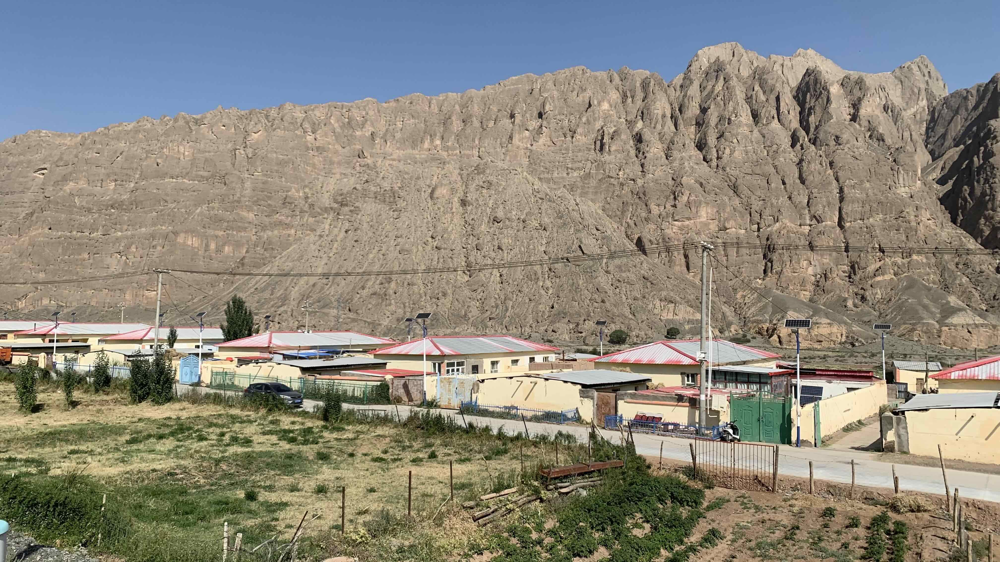
此處已經是邊防地區，原以為不會有城鎮，沒想到沿途還是有不少民居。

就當作是在新疆的最後一餐，轉進路旁的餐廳，一次點了三串烤肉。

一盤家常拌麵。
將盤子拉近時發現盤子是冰的，麵是冷的……菜是涼的……怎麼做到的呢？
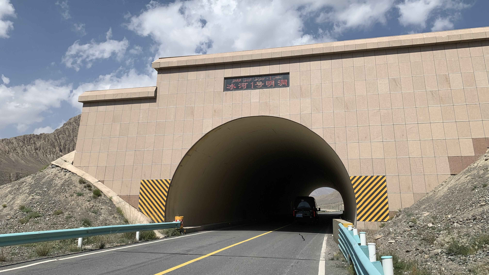
繼續出發。前方出現叫做「冰河一號明洞」的山洞。
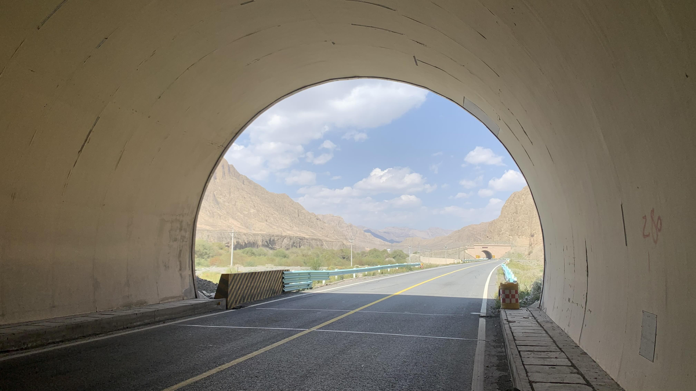
接著連續幾個山洞，但是上方並沒有山。
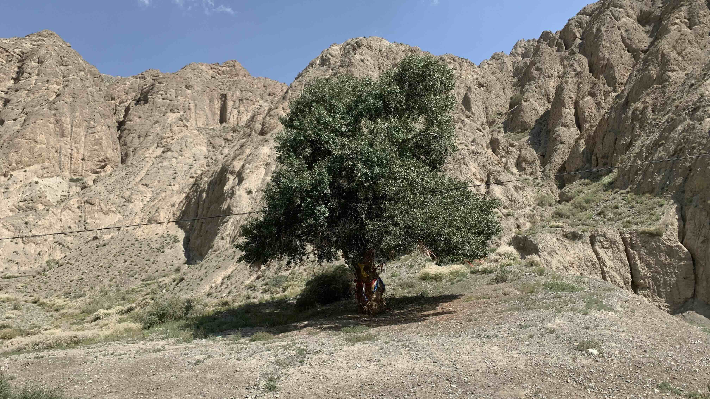
山下有幾棵大樹，樹上綁著紅藍黃白的布條。
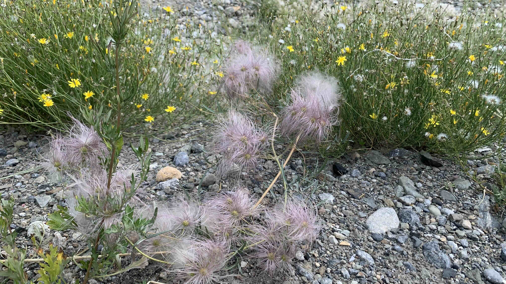
沿途不斷出現的植物，我覺得他們的髮型和髮色在風中晃動時很搖滾。
靠近口岸的緣故，終於有心思停下來幫路邊的花拍照。新疆的花真的很美，各種紫色、各種紅色，還有黃色和藍色。可是先前在新疆時經常感到憋屈，因此一直沒有幫它們拍照。
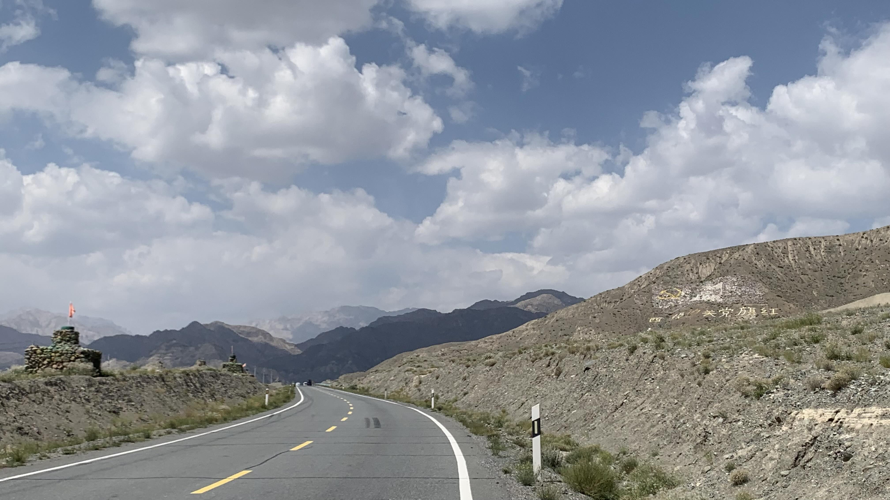
沿途有好多護邊員正在搬石頭和輪胎，堆出這些坦克車，不確定什麼用意，不過炮口都是對著吉爾吉斯的方向。
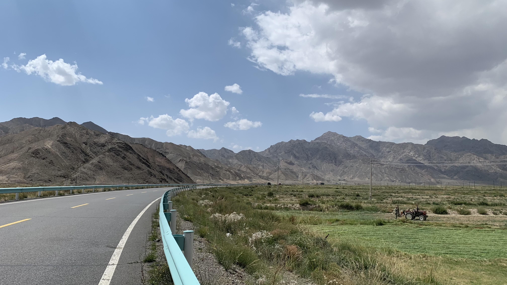
路旁的芒草樣植物正在被收割，收割後的草捆在一輛白色小貨車後方，也許是餵動物的經濟作物。
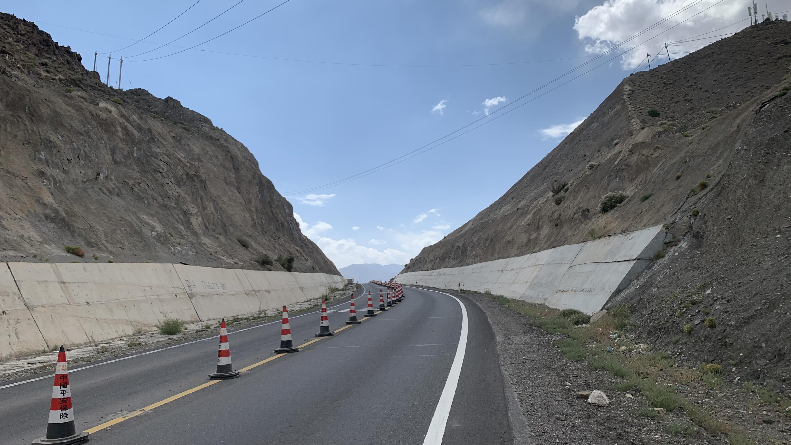
照片拍得有點多，一方面是風大，一方面是坡陡。比如這個風口。
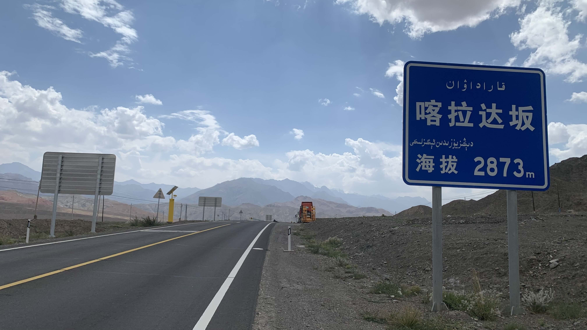
終於要下山了嗎？太天真了，後面還是不斷地上坡和逆風。
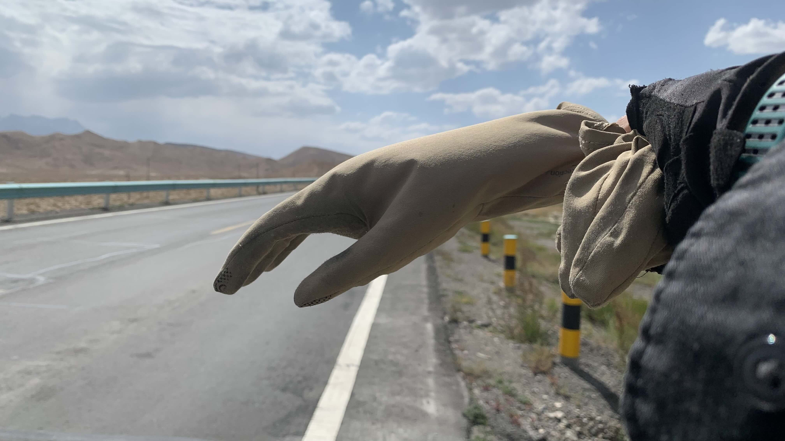
風太強了，乾脆停下來休息，順便拍個空氣手套。
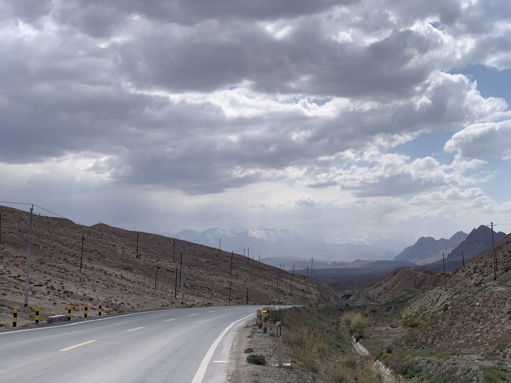
遠處的雪山代表口岸要到了。
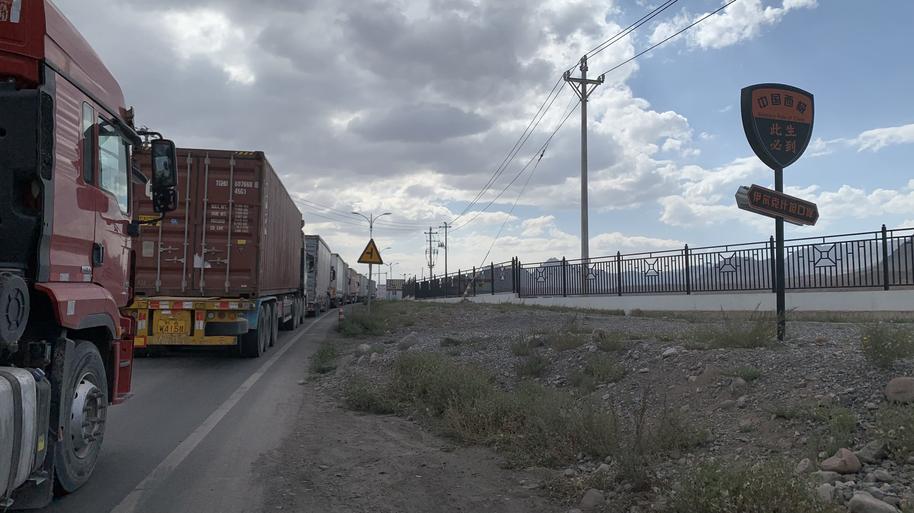
這沒有盡頭的車陣，全都是等著過境的車輛。
先到旁邊的超商買幾瓶水和飲料，第一天也許沒辦法換到錢。
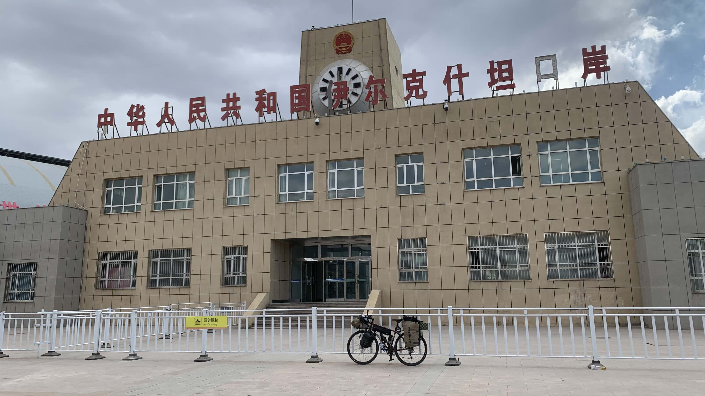
按照警衛指示，走進散客通道，很明顯散客只有我一人。
安檢時很順利，將所有車包拆下來過一次機器就完成了。畢竟是出境，不像入境時檢查得這麼仔細。
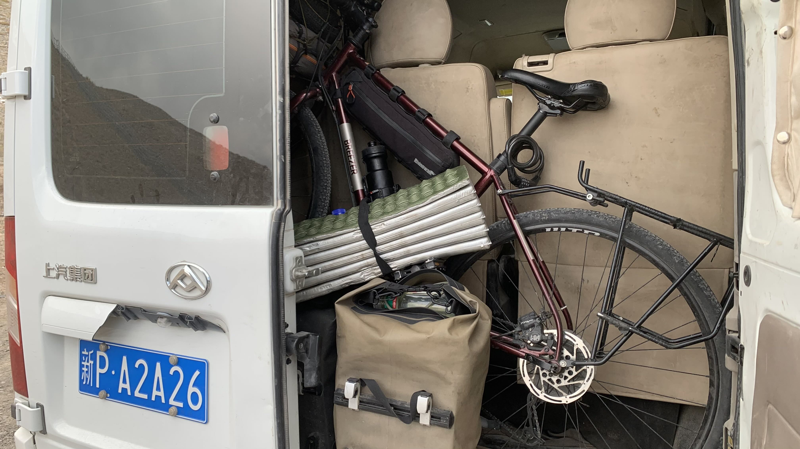
兩位檢查行李的安檢人員和我一起把二十三號和車包帶到門邊，引導我上了一輛白色麵包車。
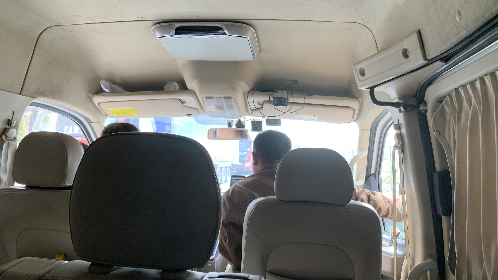
這裡到國門之間是不允許走路騎車的，麵包車的費用是20元。
到了國門，司機放下我和他旁邊的乘客後就離開了。
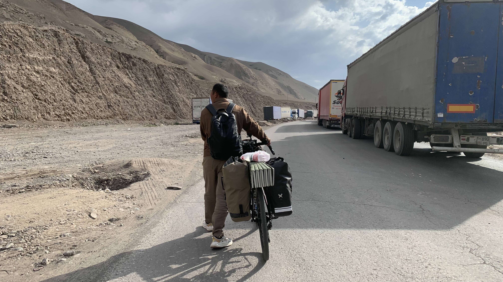
和我一起下車的新疆男子是柯族，憑藉著語言優勢在吉爾吉斯當中國老闆們的翻譯。他邀請我一起走到海關，想了一秒，也無不可，於是跨下車和他一起散步。
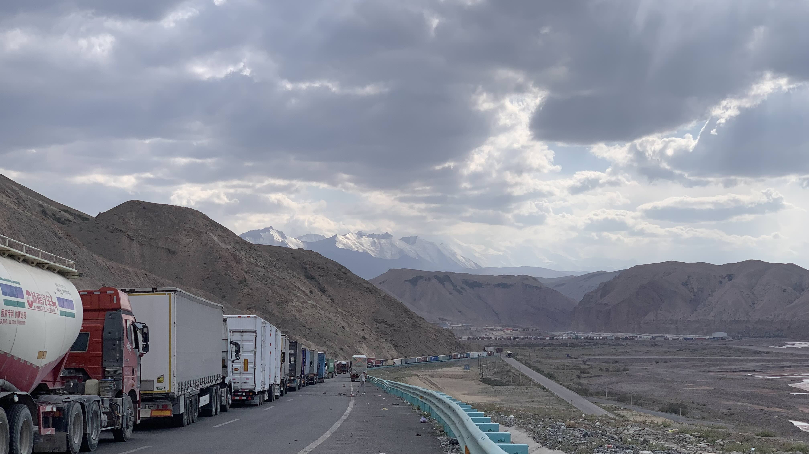
海關能有多遠呢，大概是幾公里路吧。走到小腿都抽筋了。到吉爾吉斯海關後，每個人員都上前和他聊上幾句，我則跟在後面入境。
「他們就想找機會要你給錢。中國人在這自駕，經常被攔下來要錢。」他回頭看了我的表情，補上一句：「你騎自行車他們不會跟你要錢。」
今日花費： 元